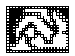

Back
Back to Index
Features - Tilemap
Requirements:
Tileset
Tools:
Tile editor.
I use
https://www.mapeditor.org/
Output:
Tilemap

Constructor:
Click to expand
Constructor usage example with canvas rendering:
Other tilemap concept:
Tilemap 2D Array
Links:
Medium - Make your own tile map
MDN - Tilemaps
Back to top